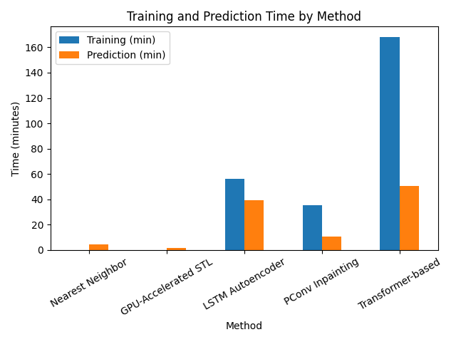

Deux scénarios, un challenge
Des compteurs intelligents relèvent la consommation électrique de chaque foyer toutes les 30 minutes. Une partie des relevés a été masquée ; il faut les reconstruire avec l'erreur absolue moyenne (MAE) la plus faible possible, dans le cadre d'un challenge Kaggle interne au master.
| Scénario | Entraînement | Test | Masqué |
|---|---|---|---|
| Step A | 3 127 foyers complets | les mêmes foyers | 30 % |
| Step B | les mêmes 3 127 foyers | 1 098 nouveaux foyers | 50 % |
La distribution des consommations est très asymétrique, avec de longues queues. Avant toute méthode, les valeurs hors de l'intervalle [Q1 − 1,5·IQR ; Q3 + 1,5·IQR] sont ramenées au quartile le plus proche, pour que des relevés aberrants ne faussent pas l'apprentissage.
02 · Les méthodesDu plus simple au plus profond
| Méthode | Principe |
|---|---|
| Plus proche voisin | copier les valeurs du foyer d'entraînement le plus proche, mesuré sur les positions observées |
| STL sur GPU | décomposition tendance + saisonnalité, réécrite en PyTorch |
| Autoencodeur LSTM | reconstruction de fenêtres masquées |
| PConv U-Net | inpainting 1D : les convolutions ne voient que les valeurs observées |
| Transformer | imputation auto-supervisée par masquage, entraînement sur plusieurs GPU |
La STL, qui a gagné, tient en quelques lignes. Elle part de l'imputation du plus proche voisin, puis répète 30 fois :
- estimer la tendance par moyenne mobile, calculée comme une convolution 1D sur GPU ;
- estimer la saisonnalité par la médiane des résidus à chaque phase du cycle, par exemple journalier (48 mesures) ou hebdomadaire (336) ;
- reconstruire tendance + saisonnalité et ne réinjecter le résultat que sur les positions manquantes.
La méthode la plus simple gagne

Le bon biais inductif vaut mieux qu'un gros modèle
- La structure des données. La consommation électrique est faite d'une tendance et de cycles journaliers et hebdomadaires : c'est exactement ce que la STL suppose.
- L'échelle. 3 127 séries de 12 864 points, soit des dizaines de millions de pas de temps : les modèles à grande capacité convergent mal dans un nombre raisonnable d'époques.
- Le budget. Pour tenir sur 4 GPU, il a fallu réduire la profondeur, les dimensions et la longueur des séquences des modèles profonds, au prix de leur capacité de représentation.
Les modèles profonds restent une piste, mais il leur faudrait plus de calcul, une architecture plus légère ou un pré-entraînement en plusieurs étapes pour battre cette référence.